Lokaverkefni
Fræsing með shop Bot


Inngangur

Verkefnastjórnun og skipulag
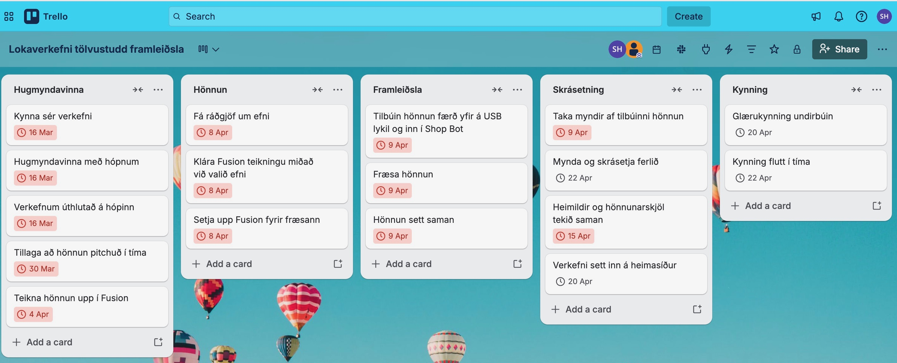
Eftir á getum við sagt að áætlunin hafi gengið eftir, en þó með nokkrum hindunum. Við vorum vel skipulagðar og náðum því að vera fyrstar til að fræsa og þá hafa nægan tíma til að setja síðurnar upp og undirbúa kynninguna. Hér fyrir neðan má síðan einnig sjá mynd af því hvernig excel skjalið okkar lítur út.
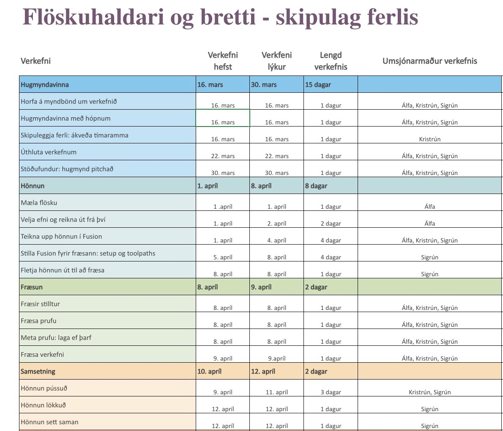
Hönnunarferli
Undirbúningur
 Við byrjuðum á því að kynna okkur verkefnislýsinguna og verkefnið með því að horfa á myndband frá kennara um verkefnalýsingu fyrir Lokaverkefnið.
Við kynntum okkur síðan hvernig fræsing virkaði og horfðum einnig á myndband frá Hafliða um fræsingu.
Þegar við höfðum kynnt okkur fræsingu betur hittumst við allar þrjár og leituðum okkur innblástrar. Við vorum sammála um að fræsa hlut með Shop Bot sem má sjá mynd af hér til hliðar.
Við byrjuðum á því að kynna okkur verkefnislýsinguna og verkefnið með því að horfa á myndband frá kennara um verkefnalýsingu fyrir Lokaverkefnið.
Við kynntum okkur síðan hvernig fræsing virkaði og horfðum einnig á myndband frá Hafliða um fræsingu.
Þegar við höfðum kynnt okkur fræsingu betur hittumst við allar þrjár og leituðum okkur innblástrar. Við vorum sammála um að fræsa hlut með Shop Bot sem má sjá mynd af hér til hliðar.
 Við skoðuðum saman flottar hannanir á Pinterest. Nokkrar hugmyndir sem við fengum voru skóhillur,
ostabretti og vínflöskustandur.
Við skoðuðum saman flottar hannanir á Pinterest. Nokkrar hugmyndir sem við fengum voru skóhillur,
ostabretti og vínflöskustandur.
 Myndirnar af hugmyndunum má sjá hér til bæði vinstri og hægri. Í lok hugmyndarvinnu ákváðum við að fræsa einhverskonar vínflöskustand.
Okkur fannst það líklegast til þess að koma vel út ásamt því að huga að eyðslu efnis, þar sem við hugsuðum að skóhilla væri aðeins of mikil eyðsla á krossviðinum.
Við fundum nokkrar góðar hugmyndir af vínflöskustöndum sem er hægt að sjá hér að neðan.
Myndirnar af hugmyndunum má sjá hér til bæði vinstri og hægri. Í lok hugmyndarvinnu ákváðum við að fræsa einhverskonar vínflöskustand.
Okkur fannst það líklegast til þess að koma vel út ásamt því að huga að eyðslu efnis, þar sem við hugsuðum að skóhilla væri aðeins of mikil eyðsla á krossviðinum.
Við fundum nokkrar góðar hugmyndir af vínflöskustöndum sem er hægt að sjá hér að neðan.


Hönnun í Fusion


Vínstandurinn samanstóð af þremur hlutum ásamt bretti fyrir skotglös. Önnur hlið standsins var teiknuð fyrst og síðan var notast við Mirror til að búa til hina hliðina. Að því loknu var miðhlutinn teiknaður og loks brettið. Í upphafi voru allir hlutir hannaðir með sömu þykkt, 18 mm, en eftir að efnisval hafði verið skoðað var tekin sú ákvörðun að minnka þykkt vínstandsins í 12 mm, á meðan brettið hélt 18 mm þykkt. Hér fyrir neðan má sjá lokaútkomuna af hönnuninni í Fusion 360, ásamt 3D-líkaninu.


Hér má einnig sjá myndband af því hvernig vínflöskustandurinn og tequila borðið var hannað í Fusion:
Þegar kom að því að fræsa vínflöskustandinn þurfti að byrja á því að fletja hlutinn út eins og í fyrri verkefnum. Við horfðum á myndbandið frá
Jóni Þóri
til þess að rifja upp hvernig það væri gert. Einnig horfðum við á annað myndband frá honum Jóni Þóri sem sýndi hvernig ætti að gera
Toolpaths fyrir fræsun.
Hér fyrir neðan má sjá mynd af öllum pörtunum flettum út með tilbúið setup.
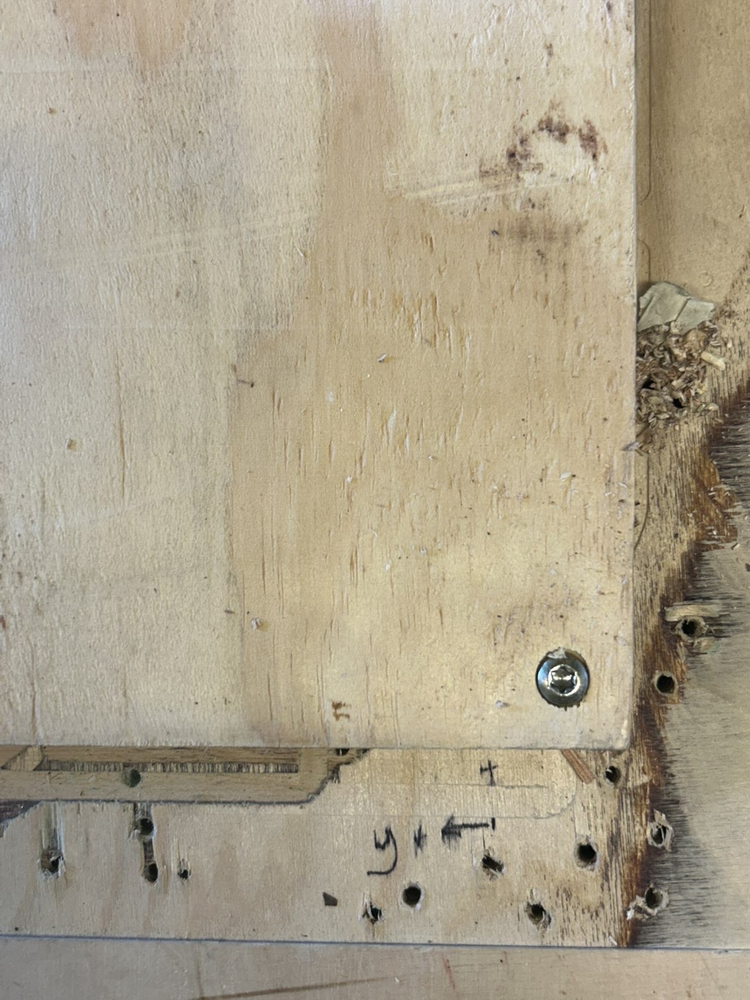 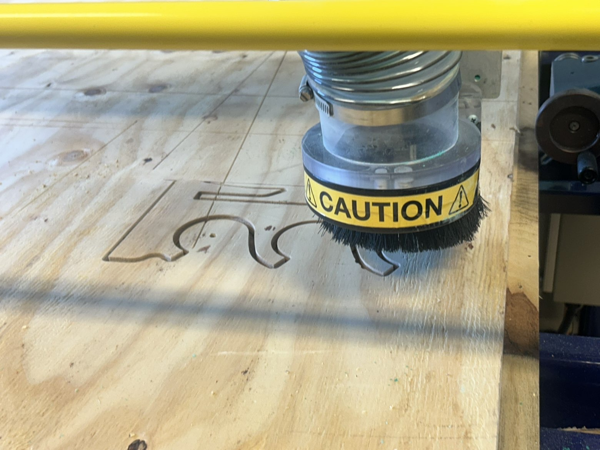 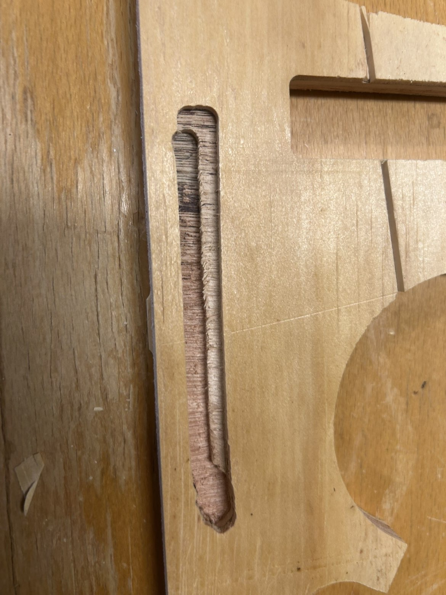 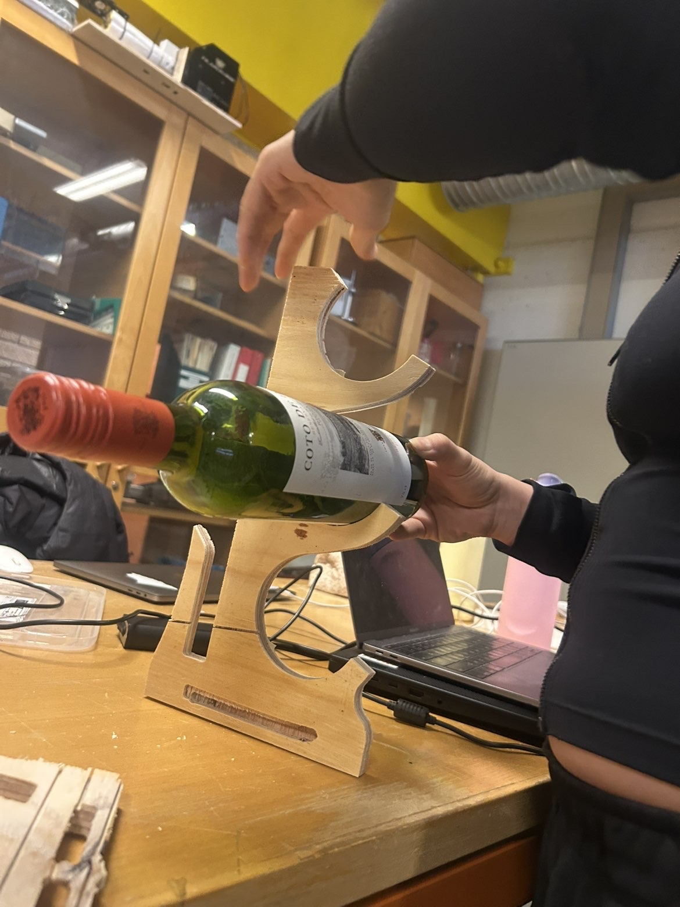
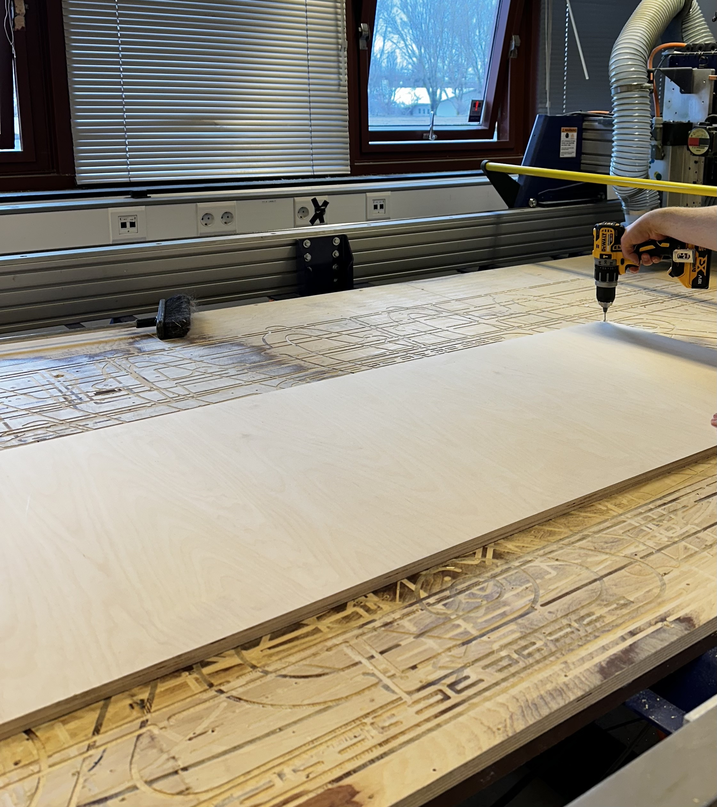 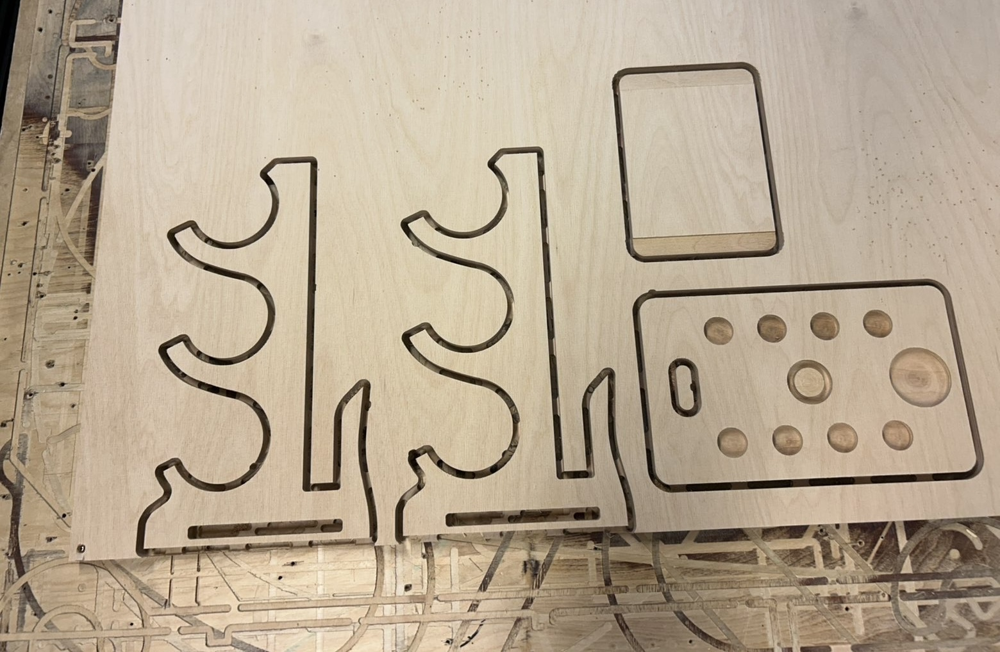
Nú var komið að því að ná öllum pörtunum okkar lausum úr plötunni. Það var gert
með því að nota sporjárn og hamar. Hér fyrir neðan má sjá okkur í vinnu við það að ná pörtunum úr
plötunni. Það tók vel á og einnig mjög langan tíma.
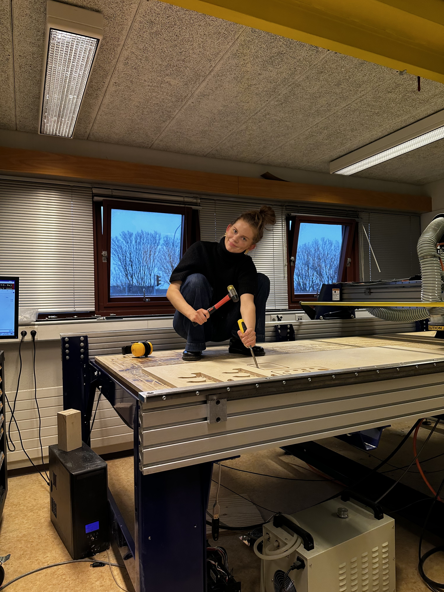 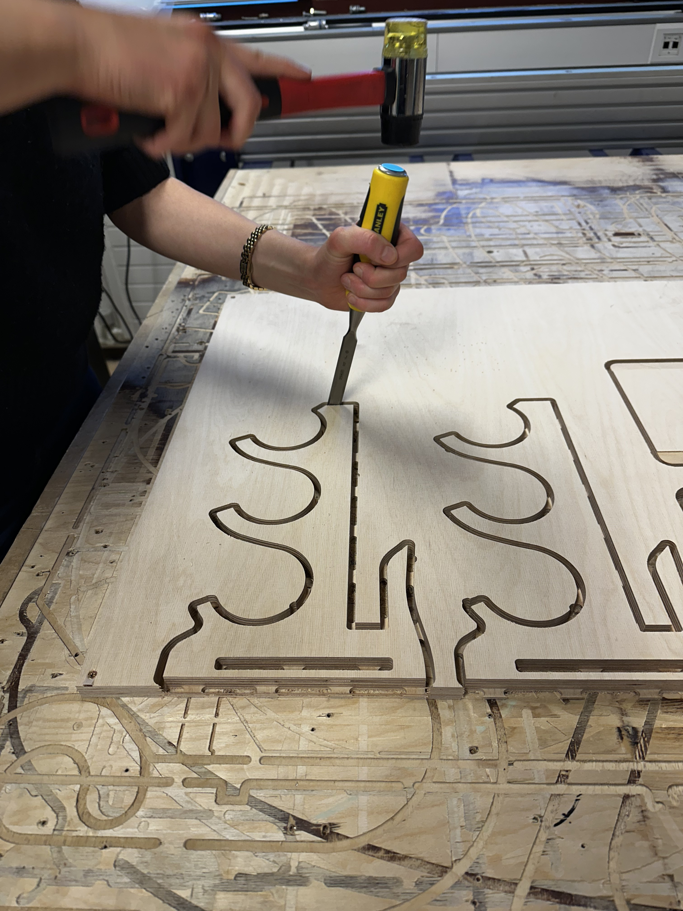
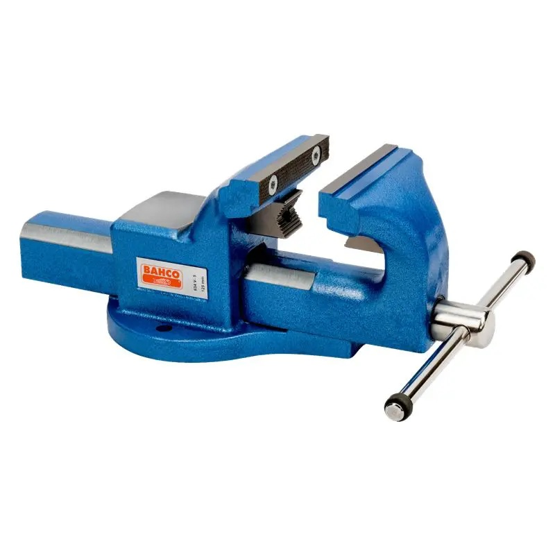 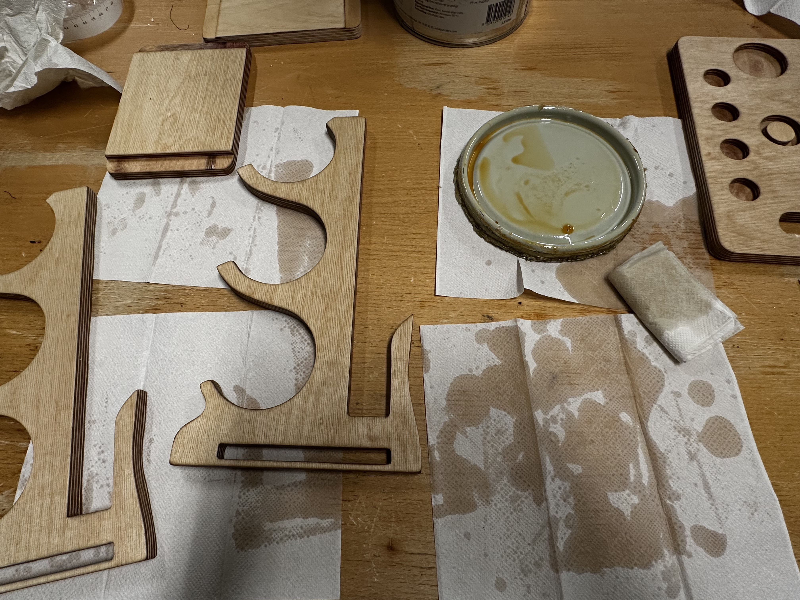 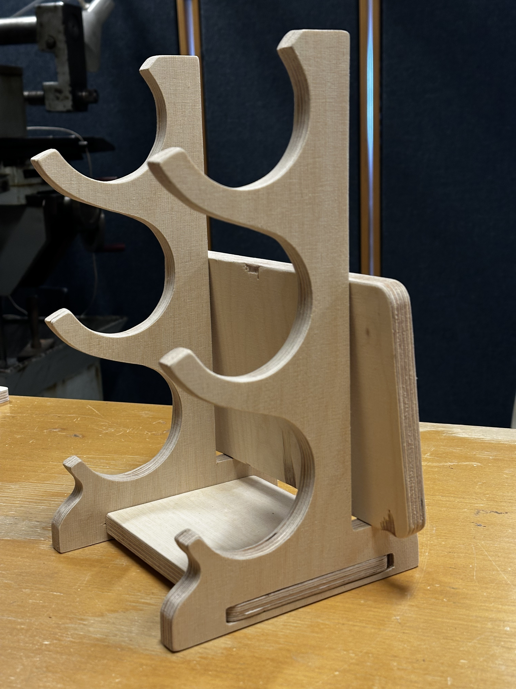 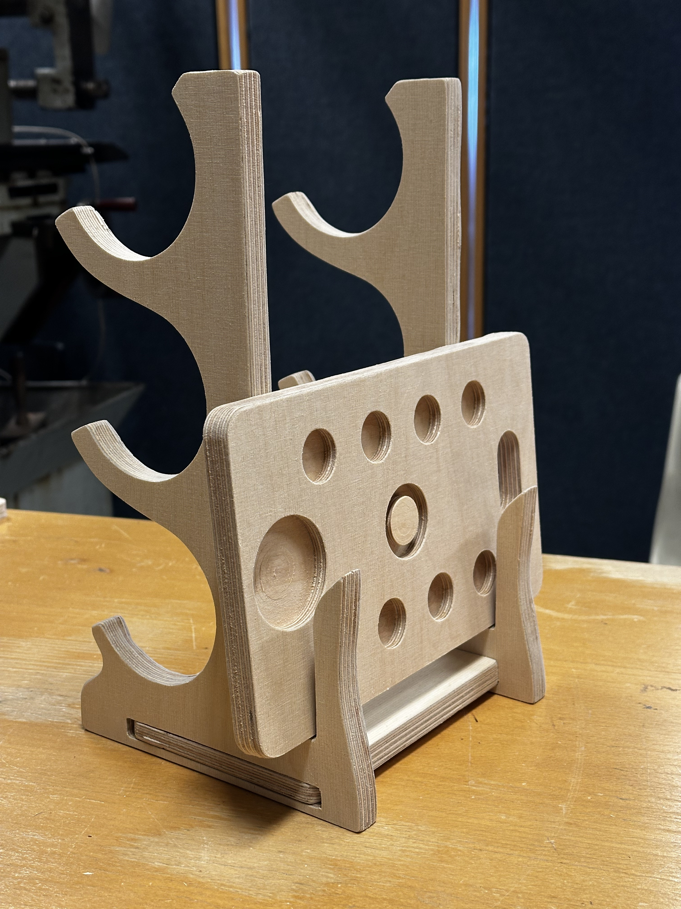
Hér fyrir neðan má skoða öll hönnunarskjöl og skjöl fyrir innblástur:
Hér er hægt að downloada zip-file fyrir öll 3fd skjölin í Fusion:
Framkvæmd
Setup í manufacture


 Öll setupin voru mjög lík. Það sem þurfti að gera var að breyta
operation type í milling og hafa byrjunarpunkt (ásinn) í neðra vinstra horni. Þessar
stillingar má sjá hér til vinstri.
Öll setupin voru mjög lík. Það sem þurfti að gera var að breyta
operation type í milling og hafa byrjunarpunkt (ásinn) í neðra vinstra horni. Þessar
stillingar má sjá hér til vinstri.
 Það sem var aðeins öðruvísi eftir pörtum voru stillingarnar í stock. Í öllum pörtunum var
stillt í mode fixed sized box en síðan breyttust stærðirnar í hæð, breidd og dýpt
eftir því hvaða part við vorum að skoða, sem er í raun skilgreinda vinnusvæðið okkar. Við pössuðum
alltaf að parturinn myndi passa í það og að dýptin væri sú sama og breiddin á hlutnum (12 eða 18mm).
Hér til hægri má sjá mynd af þessum stillingum fyrir tequila borðið sem er 18mm á breidd.
Það sem var aðeins öðruvísi eftir pörtum voru stillingarnar í stock. Í öllum pörtunum var
stillt í mode fixed sized box en síðan breyttust stærðirnar í hæð, breidd og dýpt
eftir því hvaða part við vorum að skoða, sem er í raun skilgreinda vinnusvæðið okkar. Við pössuðum
alltaf að parturinn myndi passa í það og að dýptin væri sú sama og breiddin á hlutnum (12 eða 18mm).
Hér til hægri má sjá mynd af þessum stillingum fyrir tequila borðið sem er 18mm á breidd.
Toolpaths


Myndir af toolpaths


Fræsun
Test

Loka fræsing
 Fræsunin gekk mjög vel og skorið var út hvern part í sitthvoru lagi. Fyrst var skorið út lappirnar,
síðan undirstöðuna og loksins tequila borðið. Hér fyrir neðan má sjá mynd af því þegar allir partar
voru enn fastir í plötunni (vegna tabs), ný tilbúnir úr fræsaranum.
Fræsunin gekk mjög vel og skorið var út hvern part í sitthvoru lagi. Fyrst var skorið út lappirnar,
síðan undirstöðuna og loksins tequila borðið. Hér fyrir neðan má sjá mynd af því þegar allir partar
voru enn fastir í plötunni (vegna tabs), ný tilbúnir úr fræsaranum.
Samsetning, pússun og frágangur
Lokaútkoma
Lærdómur
Í þessu verkefni lærðum við þrjár mikið, bæði um hönnunarferlið sjálft
og framkvæmdina. Við fórum frá hugmyndavinnu og teikningu
yfir í uppsetningu í Fusion 360, fræsingu, samsetningu og loks frágang.
Í ferlinu kom líka í ljós að það þarf oft að prófa sig áfram
og laga hluti sem fara ekki alveg rétt í fyrstu.
Við lærðum líka hvað það skiptir miklu máli að
undirbúa vinnuna vel, vera þolinmóðar og vinna vel saman. Þótt
ýmislegt hafi komið upp á á leiðinni, þá lærðum við mikið af því og gátum
notað það til að bæta lokaútkomuna. Á heildina litið var þetta
mjög skemmtilegt og lærdómsríkt verkefni og við erum mjög ánægðar
með það sem við náðum að gera.
Mitt framlag
Ég sá um það að búa til setup í manufacture og allt tengt því (búa til tól, feeds, speeds og toolpaths). Ég sá um samsetningu vínflöskustandsins, pússa og bera olíu á hann. Ég sá einnig um það
að búa til sameiginlegt vefsvæði fyrir verkefnið. Að lokum tókum við allar þátt í því
að fylgjast með fræsaranum og læra á hann.
Hönnunarskjöl